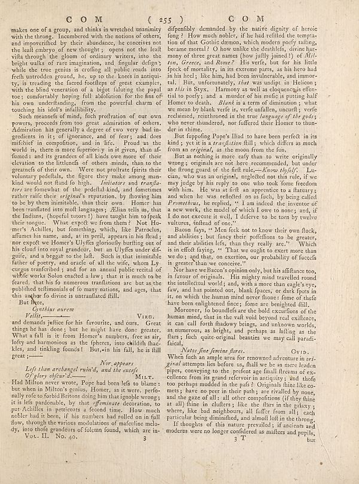

Scan ID britannica:309f765b1ecc83e0a7f7762e44b4a927a7555443:train:2448
Image SHA-256 f5e4884f245dcd6ad7cc397797014544877dd30c843c6dde29d97203b6b52245
Status: ok. Running header: **C O M ( 255 ) C O M** (catchword). Removed page furniture: Page-header: **C O M ( 255 ) C O M**.
PDF · raw Parse reply · LaTeX
Entries: E0219

| # | Class | Box | Parse 3.5 | Used text | Source |
|---|---|---|---|---|---|
| 1 | Text | [0.0264, 0.0539, 0.4502, 0.2352] | makes one of a group, and thinks in wretched unanity with the throng. Incumbered with the notions of others, and impoverified by their abundance, he concecites not the leaf embryo of few thoughts: open out the life wilts through the glown of ordinary writers into the bright walks of rare imagination, and singular design while the true genius is crafting all public roads into fresh untenden ground, like, up to the knees in antique try, is treading the faced foodless of great examples, with the blind-versation of a bigot faluting the papal too; comfortably hoping full: solutions for the fine on | makes one of a group, and thinks in wretched unanimity with the throng. Incumbered with the notions of others, and impoverished by their abundance, he conceives not the least embryo of new thought; opens not the least vista through the gloom of ordinary writers, into the bright walks of rare imagination, and singular design; while the true genius is cropping all public roads into fresh untrodden ground, he, up to the knees in antiquity, is treading the faded footsteps of great examples, with the blind veneration of a bigot fawning the papal toe; comfortably hoping full absolution for the sins | super_vl |
| 2 | Text | [0.0273, 0.2336, 0.4512, 0.6188] | Such meanings of mind, fact profission of our own power, proceeds from too great admiration of others. Admiration has generally a degree of two very bad in-gedcters in its: if ignorance, and or fears, and does mifcher in compoffion, and in fic. Proof as the world is, there is more foperiously in it given, than af-funds: and its grandes of all kinds owe more of their elviation to the litlands of others minds, than to the greatest of their own. We no podficate spirit their voluntary pedefells, the figure they make among mankind would now find a high. _Infinityer and transfi-_ are forehead what t | Such meanings of mind, such profession of our own powers, proceeds from too great admiration of others. Admiration has generally a degree of two very bad ingredients in it; of ignorance, and of fear; and does mischief in composition, and in life. Proud as the world is, there is more superiority in it given, than assumed: and its grandee of all kinds owe more of their elevation to the littleness of others minds, than to the greatness of their own. Were not prostrate spirits their voluntary peddlers, the figure they make among mankind would not stand so high. Imitators and translators are somewh | super_vl |
| 3 | Text | [0.0479, 0.6195, 0.0908, 0.632] | But here, | But here, | super_vl |
| 4 | Text | [0.0488, 0.6312, 0.4961, 0.7445] | _Gristhus nurem_ _Ville -_ Vare. and demands justice for his favourite, and ours. Great things he has done; but he might have done greater. What a fall is is from Home’s eures, free as air, lofy and harmonious as the fpherer, into chillich face kies, and tinkling found! But,-in his fall, he is ill great | But hight, Cynthius aurem Vellit,— and demands justice for his favourite, and ours. Great things he has done; but he might have done greater. What a fall is it from Homer's numbers, free as air, lofty and harmonious as the spheres, into childish fack- les, and tinkling founds! But, in his fall, he is full great;— | super_vl |
| 5 | Section-header | [0.2744, 0.743, 0.374, 0.7578] | _Nor appears_ | Nor appears | super_vl |
| 6 | Caption | [0.0654, 0.7547, 0.3799, 0.7812] | _Left than archangel ruin'd, and the exact_ Of _Ivyself._ | Left than archangel ruin'd, and the excess Of glory obfeur'd.—— | super_vl |
| 7 | Text | [0.0254, 0.7828, 0.4492, 0.8945] | Had Milton never wrote. Pope had been felt to blame; but when in Milton’s genius. Homer, as it were, perfoally role to boriblighters doing him that google wrong; it is lels paradisable, lay that _affirmish_, decoration, to par Achilles in petticas a second time. How much nobler had it been, if his numbers had rolled on in fall flow, through the various modulations of maculoline melo-dy, into those grandeurs of folcmn found, which are in | Had Milton never wrote, Pope had been left to blame: but when in Milton's genius, Homer, as it were, personally rose to forbid Britons doing him that ignoble wrong; it is less pardonable, by that effeminate decoration, to put Achilles in petticoats a second time. How much nobler had it been, if his numbers had rolled on in full flow, through the various modulations of masculine melody, into those grandeurs of solemn sound, which are in | super_vl |
| 8 | Footnote | [0.0596, 0.8938, 0.4434, 0.9102] | Vor. H., No. 40. 3 | , into those grand divisions of tolemn found, which are in- | super_vl · expanded_beyond_parse |
| 9 | Text | [0.4629, 0.0523, 0.8877, 0.2734] | dipenfully demanded by the native dignity of heroic fong? How much nobler, if he had refilled the tempta-tion of that Gootile demos, which modern poody talking, because moral! I don willke the doubtlets, divine har-many of three great names (how jully joined) of _Wil- ton, Greece,_ and _Rome?_ His verfe, but for his little feck of mortality, in its extreme parts, as his hero had in his heel; like him, had been insulterable, and imoro-tal. But, unfortunately, _that_ was undute to Helicon; as _this_ in Stryx. Harmony as well as duquencais effen-tial to potify, and a murder of a number of us abou | dispensibly demanded by the native dignity of heroic song? How much nobler, if he had refilled the temptation of that Gothic demon, which modern poetry talking, because moral! I don willke the doubtlets, divine harmony of three great names (how justly joined!) of Milton, Greece, and Rome? His verse, but for his little speck of mortality, in its extreme parts, as his hero had in his heel; like him, had been invulnerable, and immortal. But, unfortunately, that was undipt in Helicon; as this in Styx. Harmony as well as eloquence is essential to poetry; and a murder of his music is putting half Ho | super_vl |
| 10 | Text | [0.4619, 0.2742, 0.8857, 0.3164] | But topping Pops: His to have been perfect in its kind; yet it is a _translation_ filly, which differs as much from an _origini_, as the moon from the fun. | But supposing Pope's Iliad to have been perfect in its kind; yet it is a translation still; which differs as much from an original, as the moon from the fun. | super_vl |
| 11 | Text | [0.4639, 0.3156, 0.8867, 0.468] | But as nothing is more caly than to write originally wrong; originals are not here recommended, but under the theory graed of the fruit rule--_Know _byful/_ La- cian, who was an original, neglected not this rule, if we may judge by the reply to one who took fone freedom with him. He was as first a happened to a fortury; and when he was reflected on as fach, by being called _Premichaela_, he applied, "I am indeed the inventor of a new work. He model of which I owe to mine, and, if I do not execute it well, I deferve to be tom by twelve vulures, instead of one." | But as nothing is more easy than to write originally wrong; originals are not here recommended, but under the strong guard of the first rule,—Know thyself. Lucian, who was an original, neglected not this rule, if we may judge by his reply to one who took some freedom with him. He was at first an apprentice to a statuary; and when he was reflected on as such, by being called Prometheus, he replied, "I am indeed the inventor of a new work, the model of which I owe to none; and, if I do not execute it well, I deserve to be torn by twelve vultures, instead of one." | super_vl |
| 12 | Text | [0.4648, 0.4688, 0.8848, 0.5523] | Bacon fays, " Mer feek not to know their own flock, and abilities, but fancy their puffellions to be greater, and their abilities lets, than they really arc." Which is in effect dying. " That we ought to exert more than we do, and that, on exertion, our probability of fuccefs is greater than we conceive." | Bacon fays, " Men seek not to know their own flock, and abilities; but fancy their poffeflions to be greater, and their abilities less, than they really are." Which is in effect saying, " That we ought to exert more than we do; and that, on exertion, our probability of fuccelfs is greater than we conceive." | super_vl |
| 13 | Text | [0.4609, 0.5531, 0.8838, 0.6367] | Now have welcom soon only, but in different too, in favor of originals. His puppy mist travelled around the intellectual world; and, with a more than eagle’s eye, fairy, and has pointed out, blank places, or dark spots in it, on which the human minder house flows of thefe have been embrightened faces; Some are being fulfilled. | Nor have we Bacon's opinion only, but his affiance too, in savour of originals. His mighty mind travelled round the intellectual world; and, with a more than eagle's eye, few, and has pointed out, blank spaces, or dark spots in it, on which the human mind never shone: some of these have been enlightened since; some are benighted still. | super_vl |
| 14 | Text | [0.46, 0.6359, 0.8828, 0.7156] | Moreover, to boundless ear the bold excursions of the human mind, that in the vail voit beyond real coffences, it can call forth shadowy beings, and unknown worlds, as numerous, as bright, and perhaps as falling as the flats , fuch quite-original beatuities we may call parodi-faical. | Moreover, so boundless are the bold excursions of the human mind, that in the vast void beyond real existence, it can call forth shadowy beings, and unknown worlds, as numerous, as bright, and perhaps as flitting as the stars; such quite-original beauties we may call paradisiacal. | super_vl |
| 15 | Section-header | [0.5029, 0.7164, 0.6826, 0.7312] | _Nates fine feminine facets._ | Natos fine feminine flores. | super_vl |
| 16 | Text | [0.459, 0.7305, 0.8818, 0.8711] | When fish an ample area for renowned adventure in ori-gird attempts lies before on, frail we be as mere denim types, conserving to the prent age final fireman of ex- excellence from its grand referoir in antiquity; and thole too perhaps mudded in the pafs / Originals due likeoc-nuts; have no more teeth and, yet stalled by none, and the gaze of all: all other compotions (if they hine at all) fine in clafers; like the flies in the galaxy; where, like bad neighbours, all suffer from all; each particular being diminished, and should loft in the thing. | When such an ample area for renowned adventure in original attempts lies before us, shall we be as mere leaden pipes, conveying to the present age small streams of excellence from its grand reservoir in antiquity; and those too perhaps mudded in the pass? Originals shine like comets; have no peer in their path; are rivalled by none, and the gaze of all: all other compositions (if they shine at all) shine in clusters; like the stars in the galaxy; where, like bad neighbours, all suffer from all; each particular being diminished, and almost lost in the throng. | super_vl |
| 17 | Text | [0.458, 0.8719, 0.8809, 0.8992] | If thoughts of this nature prevailed; if ancients and moderates were no longer confidered as matters and pupils, | If thoughts of this nature prevailed; if ancients and moderns were no longer considered as masters and pupils, | super_vl |
| 18 | Picture | [0.6543, 0.9016, 0.6816, 0.9156] | T | T | parse |
Britannica scans: National Library of Scotland, CC0 1.0. Wikipedia text: Wikipedia contributors, CC BY-SA 4.0, revision links on each page. Generated 2026-10-18T13:26:14+00:00.